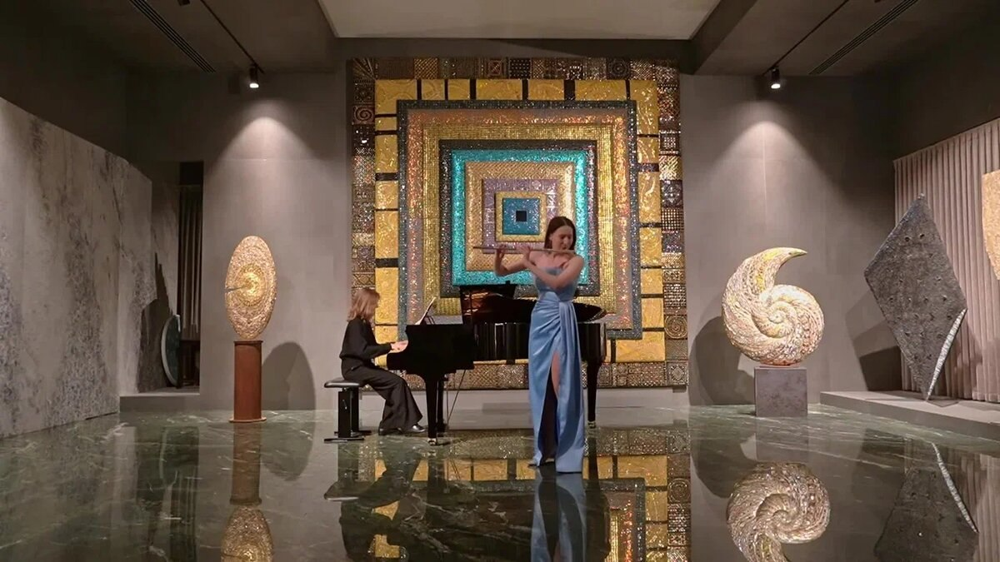

Флейта | Академическое и джазовое исполнительство Москва, Россия • Email: albinab1610@gmail.com
Родилась 16 октября 2007 г. в Москве.
Музыкант, лауреат всероссийских и международных конкурсов. Выпускница ГБПОУ г. Москвы «Академия Джаза» (класс преподавателя Прялкиной Анны Александровны). Сочетает сильную академическую классическую школу с джазовым исполнительством и искусством импровизации. Ведет регулярную концертную деятельность на ведущих площадках столицы, включая залы Московского международного Дома музыки, Российской академии музыки имени Гнесиных и Московской государственной консерватории имени П. И. Чайковского. Творческие интересы исполнительницы также лежат на стыке живого инструментального искусства, медиа-индустрии и современных звуковых технологий.
Приглашенная солистка Международного фестиваля «Vivaldiada» (Северная Македония, 2026) с сольной программой из произведений А. Вивальди.
Международный молодежный симфонический оркестр BISYOC (Германия, 2026) — приглашена в проект по результатам конкурсного отбора.
Молодежный оркестр ESYO (European Symphony Orchestra) под руководством Игоря Коретти (Словения — Италия, сезон 2025/2026).
Выступления в ансамблях — участник квартета флейт под руководством Томассо Биссиака (Словения, 2025).
Цикл концертов «Романтизм: истоки и горизонты» (сезоны 2024–2027) — постоянный участник международных программ лауреатов.

Зависит от задачи. Выступления возможны как сольно, так и в составах. Если для проекта нужен дуэт (например, с фортепиано или гитарой) или камерный ансамбль — есть проверенные коллеги-музыканты, с которыми можно быстро собрать программу.
Либо полноценный сольный концерт из двух отделений, либо несколько сетов по 15–30 минут для коммерческих мероприятий. Тайминг всегда можно гибко подстроить под сценарий события.
Да, открыта к сотрудничеству с кинокомпозиторами, режиссерами и брендами. Классическая база и умение импровизировать позволяют быстро поймать нужную атмосферу и подстроиться под любой концепт.
Да. Вы присылаете трек и свои пожелания — запись проходит в профессиональной студии. На выходе вы получаете чистые аудиоисходники: сольные партии, фоновые подклады или варианты импровизации на выбор.
Инструмент звучит полностью в акустике. Для небольших залов аппаратура вообще не нужна. Если сцена большая или идут съемки — понадобится всего один стандартный инструментальный микрофон на стойке.
Да, международная концертная деятельность ведется регулярно. Все документы и визы в порядке. Возможность поездки и условия обсуждаются индивидуально под конкретные даты.